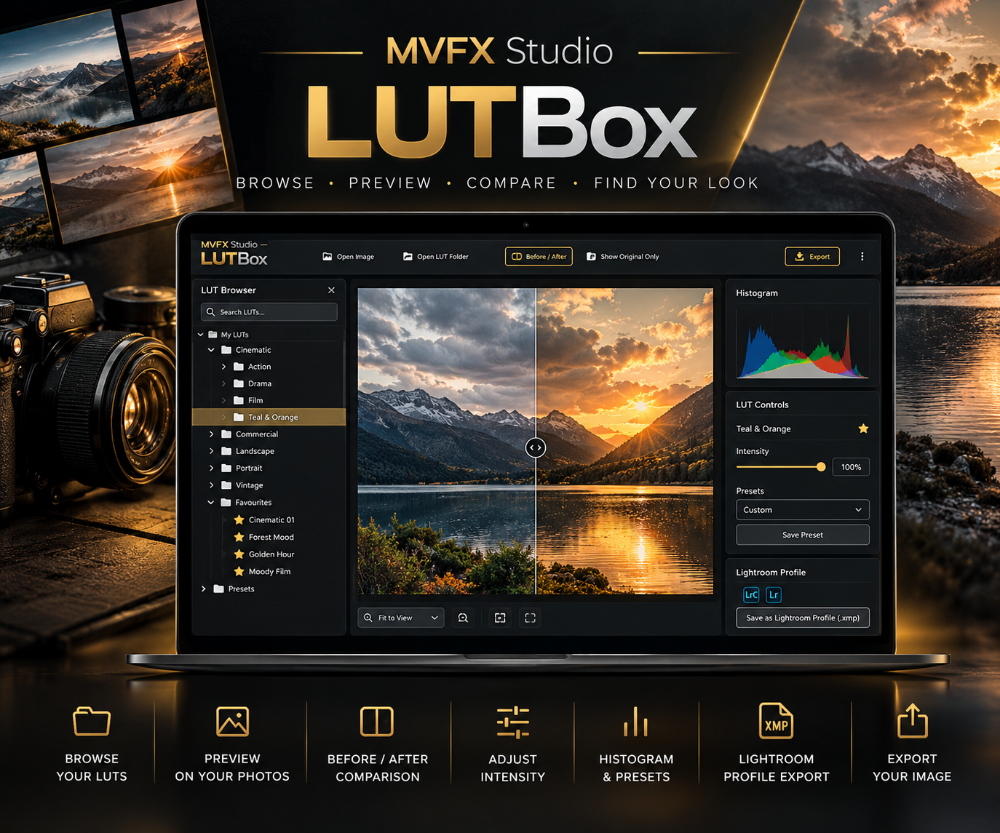

Windows application
MVFX Studio — LUTBox

Browse. Preview. Compare. Find your look.
£4.99
View detailsProducts
Windows tools from MVFX Studio. Purchase and download are completed on the Microsoft Store, ArtStation, or Gumroad.
Windows application

Browse. Preview. Compare. Find your look.
£4.99
View detailsWindows desktop
£4.99
LUTBox is a Windows application for browsing, previewing, comparing, and applying your own 3D .cube LUTs to photographs. It keeps the work in one place: choose a look, judge it on the image you actually want to edit, then export.
A LUT library is not included. RAW preview support varies by camera and file. LUTBox complements a photo editor and does not replace one.
Platform: Windows
Purchase and download happen on the Microsoft Store, ArtStation, or Gumroad. Questions: admin@mvfx.studio.